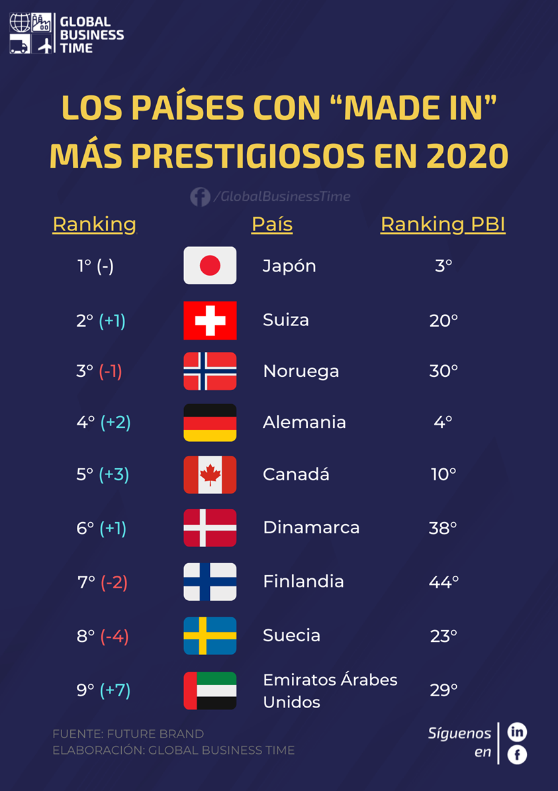
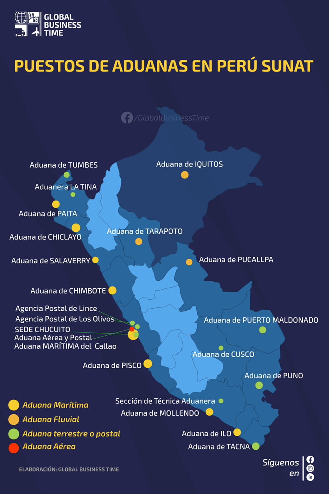
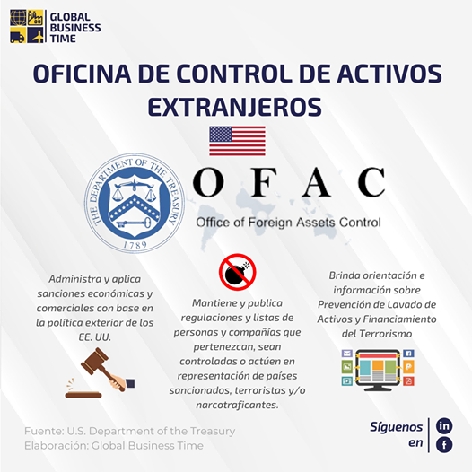
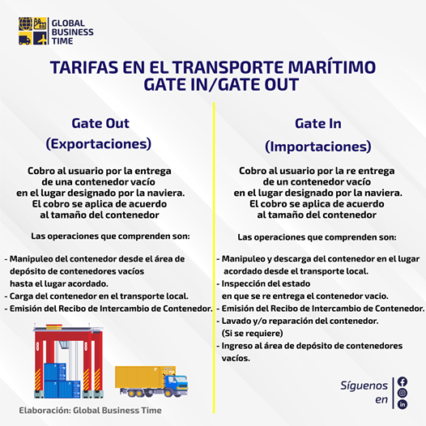
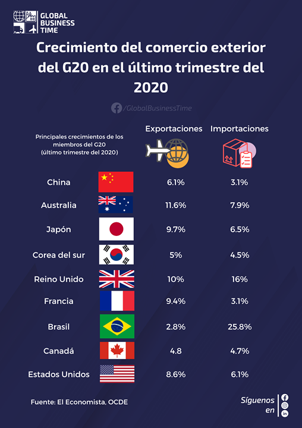
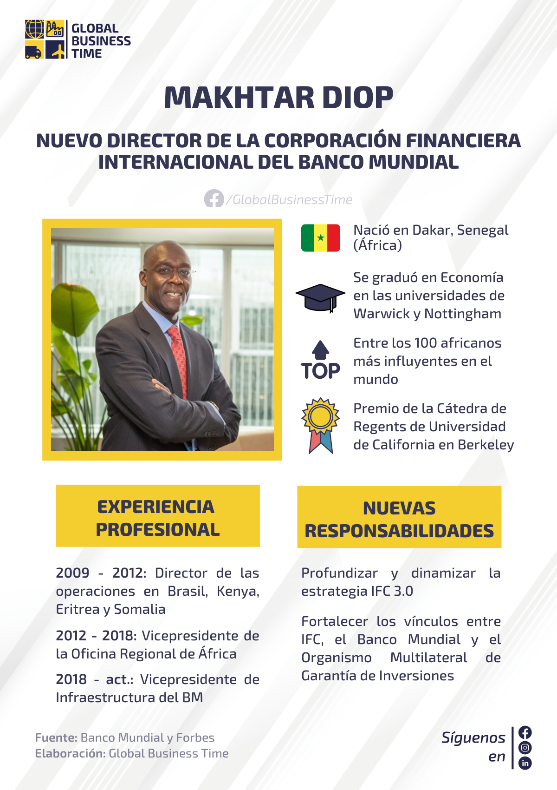

LOS PAÍSES CON “MADE IN” MÁS PRESTIGIOSOS EN 2020
El efecto made in o “país de origen” es de especial interés en la comercialización internacional de productos. El país de origen puede considerarse como un atributo externo a las características físicas del...
Leer más

¿QUÉ ES LA SUNAT?
La Superintendencia Nacional de Aduanas y de Administración Tributaria – SUNAT, de acuerdo a su Ley de creación N° 24829, Ley General aprobada por Decreto Legislativo Nº 501 y la Ley 29816 de Fortalecimiento de la...
Leer más

¿QUÉ ES LA OFICINA DE CONTROL DE ACTIVOS EXTRANJEROS?
Es un órgano del Departamento del Tesoro de los Estados Unidos, el cual tiene como fin administrar y hacer cumplir las sanciones económicas y comerciales basadas en la política...
Leer más

TARIFAS EN EL TRANSPORTE MARÍTIMO: GATE OUT / GATE IN
Frecuentemente el Exportador o Importador encuentra dentro de la factura de servicios de agencias marítimas o navieras el cobro por “Gate Out” o “Gate In”, luego paga aquel servicio sin conocer a...
Leer más

EL COMERCIO EXTERIOR DEL G20 SIGUIÓ CRECIENDO EN ÚLTIMO TRIMESTRE DE 2020
Según la Organización para la Cooperación y el Desarrollo Económico, el comercio internacional de las economías que conforman el G20 mostró crecimientos en el último trimestre de 2020. Las exportaciones...
Leer más

MAKHTAR DIOP, NUEVO DIRECTOR DE LA CORPORACIÓN FINANCIERA INTERNACIONAL DEL BANCO MUNDIAL
El presidente del Banco Mundial, David Malpass, nombró al africano Makhtar Diop como el nuevo director gerente y vicepresidente ejecutivo de la Corporación Financiera Internacional (IFC), una institución del Banco...
Leer más